Original designs, made to read at a glance. Each shows the large draft, the real size (54×54 px) and how it looks in the watch's app list.
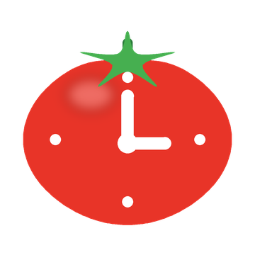
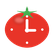
real sizeThe tomato is the clock face: white hands and four hour dots.
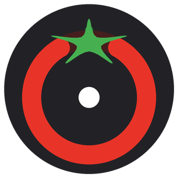
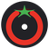
real sizeThe app's own progress ring on a dark badge, with the leaf in the gap at the top. Matches the main screen.
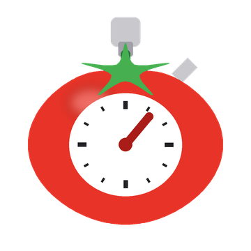
The stem becomes the stopwatch crown and button; white dial with ticks.
A cut tomato whose seeds sit where the hours are, with clock hands in the middle.
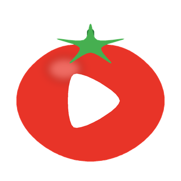
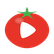
real sizeTomato with a start button: "press to start a pomodoro".
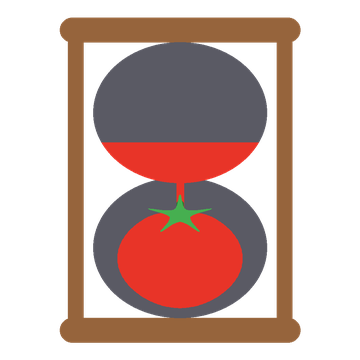
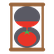
real sizeA little tomato left in the top bulb, a full one forming in the bottom.
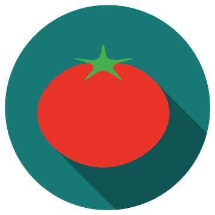
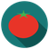
real sizeFlat tomato on a teal badge with a long diagonal shadow; pops on black.
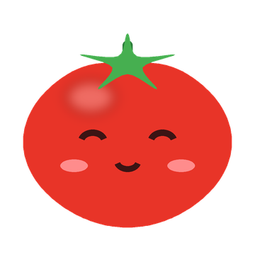
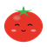
real sizeA happy, focused little tomato with closed eyes and blush.